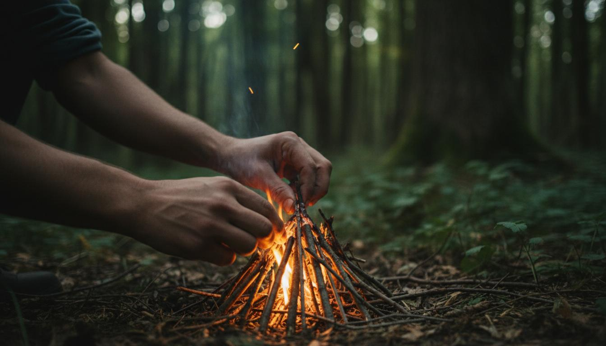
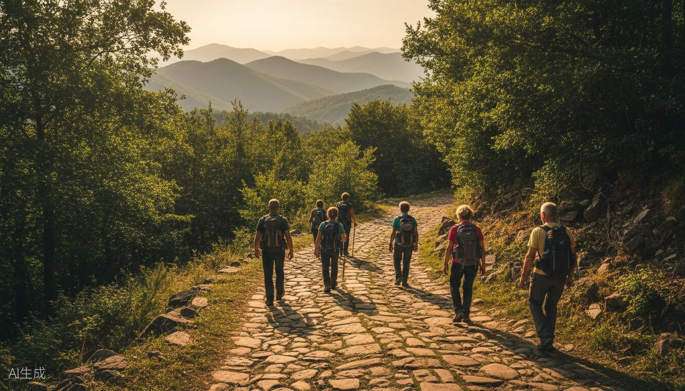

Nuova
NuovaSoglia · 6 ore
Orienteering sensoriale
Orientarsi non con il GPS, ma con i sensi: leggere il territorio, le tracce, i suoni. Imparare a capire dove sei.
Scopri di piùTorna a sentirti parte del mondo vivente.
Esperienze nel selvatico per rallentare, esplorare, sentire e tornare in relazione con ciò che ti circonda. Non per imparare a stare nella natura: per scoprire cosa succede quando inizi davvero ad abitarla.
Organizzi. Prevedi. Rispondi. Corri. E spesso fai esperienza del mondo attraverso uno schermo.
Il selvatico è un luogo dove non tutto risponde alle tue previsioni. Per starci devi tornare presente. È lì che si riapre qualcosa.
Il cuore del progetto sono le esperienze per adulti. Ci sono anche proposte per scuole, ragazzi e team.
Esperienze nel selvatico per ritrovare presenza, relazione e ritmo. Dalle soglie di poche ore alle immersioni con pernotto, fino a Escape the City.
Vedi le esperienze →Natura, autonomia e gruppo come laboratorio di crescita. Le competenze sono il veicolo; il gruppo è il laboratorio.
Scopri la proposta →Non un team building da consumare: un’esperienza concreta per vedere come un gruppo si muove, decide e collabora.
Scopri la proposta → Pochi posti
Pochi postiCammini, ti orienti, accendi un fuoco, cucini, dormi nel bosco. Prima fai, poi capisci.
€115 early bird €135
Esperienze brevi, poche ore, per provare un diverso modo di stare.
NuovaOrientarsi non con il GPS, ma con i sensi: leggere il territorio, le tracce, i suoni. Imparare a capire dove sei.
Scopri di più Nuova
NuovaMezza giornata per tornare a fare gruppo come una piccola tribù: gioco, fuoco, collaborazione, cura del luogo.
Scopri di più
L’archetto come specchio: guardi come reagisci quando qualcosa non viene subito. Torni con un’azione, non un’idea.
Scopri di piùDisegni la mappa del tuo percorso con mappa e bussola come metafore. Un oggetto concreto da portare a casa.
Scopri di piùCon pernotto: il tempo per vivere un ciclo più completo, nel bosco.

NuovaCustodire il fuoco per una notte: accenderlo, mantenerlo a turni, il cerchio al buio, dormire nel bosco. Dalle 18 alle 12.
Scopri di più
Un giorno e una notte sul sentiero storico tra Bologna e Firenze: bivacco nel bosco e visita a un ecovillaggio.
Scopri di più
Fuoco, acqua, terra, riparo, cibo, buio: sei elementi come porte per guardarti dentro. Non per sopravvivere, per convivere.
Scopri di più
Quattro giorni zaino in spalla. Ogni tappa è una fase del viaggio: la chiamata, la sfida, la visione, il ritorno.
Scopri di piùL’esperienza viene prima della spiegazione. La natura non è lo sfondo: è parte dell’esperienza.
Giulia
Escape the City
“La prima notte nel bosco non la scordo. Ci torno con la mente ancora adesso.”
Davide
La Mappa del tuo Viaggio
“Ho iniziato a notare cose che di solito non vedo. È rimasto un modo diverso di guardare.”
Luca
Accendi il tuo Fuoco
“Il fuoco non prendeva. Poi ho capito che stavo forzando. Vale anche fuori dal bosco.”
Video segnaposto, da sostituire con le testimonianze reali. · Tutte le testimonianze →
Capire. Osservare. Fare domande.
Sentire. Lasciarsi sorprendere. Entrare in relazione.
Fare. Costruire. Sperimentare. Provare.
Non sono tre momenti separati. Sono tre modi di entrare nella stessa esperienza.
Sei capitoli per capire come sei finito a gestire la vita invece di viverla — e da dove si comincia a cambiare il modo in cui stai in un luogo.
Prossime uscite, storie dal bosco, pensieri attorno al fuoco. Gruppi piccoli, posti che finiscono.